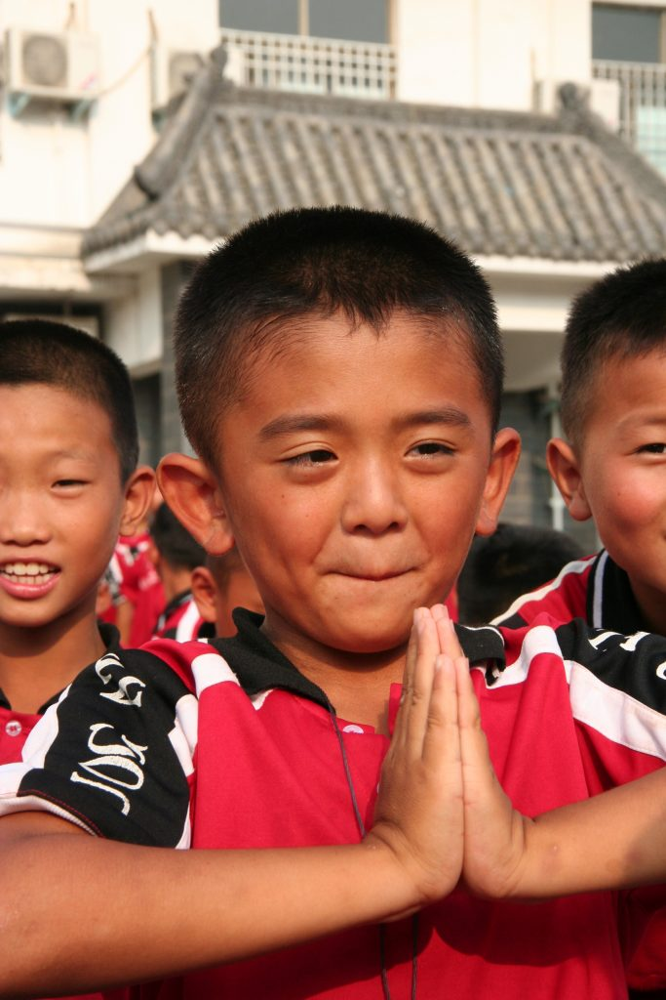

QIGONG

Qigong is een eeuwenoude Chinese (bewegings)filosofie en is voor iedereen toegankelijk. Qigong is er op gericht bewustzijn, qi (energie) en het lichaam te transformeren, zowel om te genezen als om te groeien in wijsheid.
De bijbehorende fysieke oefeningen zijn simpel, zacht en makkelijk. Ze zijn goed voor het soepel maken van je lichaam, maar brengen ook je gedachten makkelijk tot rust. De fysieke oefeningen werken vaak ook door op mentaal en emotioneel niveau en ze geven je hierin inzichten.
Wat kun je bereiken?
- lichamelijke klachten verhelpen c.q. verminderen
- meer energie, concentratie en rust ervaren
- beter slapen
- gedachten tot rust brengen
- verkrijgen van inzichten
Trainingsmogelijkheden
De wekelijkse live groepslessen 'Nature Qigong' zijn iedere woensdagavond te Geldermalsen. Voel je welkom om aan te sluiten en de natuur optimaal te ervaren tijdens het beoefenen van Qigong. We trainen op een beschutte en besloten prachtige plek.
Op dit moment zijn er (nog) geen wekelijkse online trainingen. Bij interesse laat het mij gerust weten, dan houd ik je op de hoogte.
Een training kan ik ook op maat voor jou maken. Ik bespreek eerst met jou jouw specifieke focus van dat moment. Dan zal ik jouw aandachtspunten op fysiek, emotioneel of mentaal vlak of juist een combinatie daarvan integreren in jouw unieke training. Na telefonisch overleg ontvang je de training live (incl. video bestand achteraf).
Voor trainingen op locatie neem gerust contact met mij op. De kosten zijn afhankelijk van de groepsgrootte en locatie.
Ervaringen
"Petra heeft de gave om met veel rust en veel energie lessen te geven waar je in op gaat en totaal tot rust komt. Iedere keer weer een hele bijzondere ervaring. Je waant je in een uur in een totaal andere wereld."
– Miranda-
"Het volgen van een les bij Petra brengt je in verbinding met jezelf en zorgt dat je in rusttoestand komt. Mijn gedachten stoppen. Petra brengt de Chi (energie) voelbaar in je lichaam over. Na de les kan ik makkelijker besluiten nemen en beter slapen."
– Anita-
Ervaringen
"Het volgen van een les bij Petra brengt je in verbinding met jezelf en zorgt dat je in rusttoestand komt. Mijn gedachten stoppen. Petra brengt de Chi (energie) voelbaar in je lichaam over. Na de les kan ik makkelijker besluiten nemen en beter slapen."
– Anita-
"Petra heeft de gave om met veel rust en veel energie lessen te geven waar je in op gaat en totaal tot rust komt. Iedere keer weer een hele bijzondere ervaring. Je waant je in een uur in een totaal andere wereld."
– Miranda-